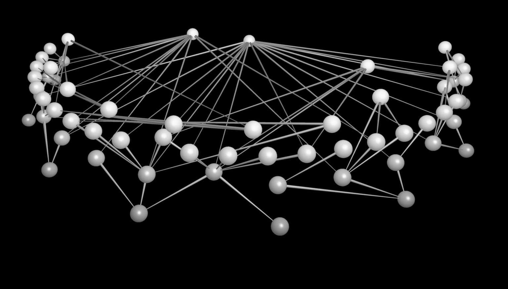

网络组学
上世纪80和90年代，人们倾向于认为在某种方式上一切都是由基因决定的。报纸上的报道都与“同性恋基因”“肥胖基因”“暴力基因”或者“酗酒基因”有关。这种态度呼应了人们对人类复杂性的秘密隐藏在基因组中的期望。DNA——细胞核中包含基因的脱氧核糖核酸分子——又称“生命的软件”，该程序负责生命体的每一个特征正是其中代码功能的障碍导致了所有的疾病。这种图景引发了人们对基因组进行测序的风潮，而人类基因组图谱于2001年2月的发布将这个风潮推向了顶点。测序的结果令人十分惊讶，人类的基因数并不比线虫多多少，而且比某些种类的水稻基因还少。人类几乎与类人猿有着相同基因组的推断是合理的，但问题是人类基因组也与老鼠类似。软件的隐喻并不支持这一证据：DNA序列本身并不能解释我们所能观察到的物种差异，更不用说单个个体的所有特征和疾病了。事实上，生物的基因与其相应的宏观特征之间还隔着一系列漫长的步骤。此间的变异决定了不同的结果。
基因之上的第一层复杂性由基因调控 给出。包含在DNA中的基因被转录和翻译以产生蛋白质。蛋白质几乎在生命的各个方面都起着核心作用：肌肉运动、血液循环、承担酶的作用、结合激素等等。此外，蛋白质还彼此相互作用：蛋白质的产生可能受到细胞内现有蛋白质的促进或阻碍。这些相互影响之间的微妙平衡对于生命而言至关重要。例如，p53这一单个蛋白质的突变就伴随着大量不同的癌症。这些交织的激活和抑制模式产生出了基因调控网络 。在这个网络之中，节点为基因，连线则是关联某个基因与其他基因表达的反应链条。
蛋白质以所有可能发生的方式相互作用，这代表着另外一个层面的复杂性。例如，一些蛋白质可以结合在一起。这些大分子像分子机器一样起作用，它们在细胞这种机器中发挥着自己的功能。为此，蛋白质必须具备正确的几何形状以彼此契合。当蛋白质以错误的方式折叠时，就可能出现一些问题。比如，人体中对应“疯牛综合征”（又称克雅二氏病）的蛋白质（即朊病毒 ）就被认为是错误折叠的。蛋白质之间所有可能的实体联系可表示为网络。在蛋白质相互作用网络 中，顶点为蛋白质，而如果蛋白质在细胞中的确相互作用，则可在相应的点之间画出一条边。
蛋白质并不足以让细胞工作。细胞通过许多不同的分子与外界环境交换着物质、能量和信息，参与其中的反应数达百万级。饥饿、饱腹感、寒冷以及生物体大致上所经历的所有状态都赖于这种被称为新陈代谢 反应的集合。而通过一系列中间步骤将一个分子转化为另一个分子的反应链则被称为代谢途径 。然而，细胞中的反应很少遵循有序序列的模式。例如，反应终端的分子经常会与开端处的分子相互作用以终止反应。这种反馈过程就闭合了反应链中的一环。所有这般路径的集合就产生了复杂的代谢网络 。
因此，生物体是几层网络共同作用的结果，而不仅仅是简单基因序列的决定性结果。基因组学中已经加入了表观基因组学、转录组学、蛋白质组学、代谢组学 等研究相关层级的学科，这通常被称作组学革命 。而网络正是这场革命的核心。
思维之网
直到18世纪，“灵魂”可以体现在某个器官中都是一个奇怪的设想。但是，医生已经意识到中风或者其他脑损伤可能会危及关键的认知功能——心与脑之间的关联从那时开始变得明显起来。当时，解剖学家弗朗茨·约瑟夫·加尔便敢于提出所有心理官能必然起源于大脑这种想法。他确定了大脑中的27个“器官”，每个器官分别负责颜色、声音、记忆、言语，以及友谊、仁慈、骄傲等等。这种想法听起来如此异类，以至于加尔不得不逃离维也纳，进而在激进的法国找寻避难所。
后来，几位生理学家试图通过比如从鸽子的大脑中去除切片这样的方式验证加尔的理论。然而，他们并未找到加尔所设想的器官存在的任何证据。因此，他们得出结论说，大脑是产生思想的一个均匀、未经分化的统一体：如其中一位生理学家所说，“大脑分泌思想就像肝脏分泌胆汁一样”。这种观念在1860年代保罗·布罗卡的研究出来之前一直占据主导地位。在表达性失语症患者的尸体解剖中，布罗卡总能在他们大脑左侧的额叶区域发现一些损伤。在确定了人们现在称其为布罗卡区域 的大脑部分之后，他便宣称，“我们用左脑说话”。从那时起，神经学家找到了负责不同活动的多个功能中心，但他们也发现这些中心区域绝少孤立运转：大脑不同区域的整合对其功能而言至关重要。
网络在被划分为专门领域的大脑模式和作为整体的大脑模式之间架起了桥梁（这与社会科学的情况并无不同，在这个领域中，网络允许我们从个人和共同体之间的某个层面描述社会）。大脑中遍布网络，其中的各种网状结构在专门的区域之间提供了整合。在小脑中，神经元形成了一个个不断重复的模块：它们的相互作用被限制在了相邻的模块之间，这与晶格中发生的事情类似。而在大脑的其他区域，我们发现了随机连接现象，即局部、居间或者遥远神经元之间的连接概率大致相等。最后，新皮质——哺乳动物的许多高级功能所涉及的区域——则将局部结构与更加随机且遥远的连接相结合。一些科学家认为这些线路体系可能负责主体意识：涌现的良知便可能是某种足够复杂的网络结构作用的结果。
确定这些神经网络的实际结构十分困难，因为细胞数量巨大，并且探测它们困难重重。我们仅掌握了那些十分简单的生物的详细神经网络图，比如一种名为秀丽隐杆线虫的寄生线虫。这种一毫米长的透明生物能存活三周，它仅有300个神经元，却是分子生物学界的超级明星。秀丽隐杆线虫是一种模式生物 ，即特别适于实验的生物，因为科学家对其特征了如指掌，且它在某些方面与人体类似。这种半透明的蠕虫通常是新药和新疗法实验的第一个基准。
目前，人们还不可能为人类大脑绘制类似的神经网络。然而，我们可以使用另外一种策略。当人们执行一个动作，即便简单如眨眼，来自神经元的电信号风暴就会在大脑中的数个区域爆发。这些区域可以通过诸如功能性磁共振 这样的技术加以确认。通过这种技术，科学家发现不同的区域会发出相互关联的信号。也就是说，它们显示出某种特殊的同步现象，这表明它们可能相互影响。可将这些区域视为节点，而如果它们之间存在足够的相关性，则它们两两之间便可画上一条边。同样在这个层次上，大脑表现为相互连接的元素集合。人的每个动作都会点亮脑中的某个连接区域。
盖亚的血管
1999年，旧金山湾区经历了大规模的藻类暴发。通常，藻类的这种暴发是农业密集用地的结果：我们将氮、磷等化肥排入海中后，它们就会成为藻类的营养物。然而，本案例中的情况并非如此，因为一些政策和限制已经减少了从不同河流排入海中的营养物污染水平。加利福尼亚州的生态学家们通过搜集三十年的观察数据得出结论说，藻类暴发有着复杂得多的原因。1997年和1998年，人们记录到了最强的“厄尔尼诺”现象之一，紧随其后的便是1999年同样强大的“拉尼娜”现象。这些现象导致了当时加利福尼亚生态系统的变化。深海处冰冷的富营养化海水涌至海岸。这些营养物质吸引了海洋中的生物——鲽鱼和甲壳类动物——进入湾区。这些动物是湾区双壳类动物的捕食者，而后者反而是藻类蔓延的障碍。双壳类动物由于捕食者的27增加而种群崩溃，这成为藻类暴发的直接原因。触发这种多米诺效应的条件可能来自正常的气候波动。然而，其后果对人类而言却是一种警告：气候变化，特别是极端气候的频率增加，可能对生态系统产生意想不到的影响。
旧金山湾区海藻暴发背后的核心结构是食物链 ——一系列物种的连接：鲽鱼和甲壳类动物捕食双壳类动物，双壳类动物消耗藻类。生物以食物链的方式从彼此身上提取他们生存所需的能量和物质（这并非生态系统内物种之间唯一可能的相互作用：生物体也可以建立互利的相互作用，比如开花植物与其授粉昆虫之间的相互作用）。每个食物链都从基位 物种开始，比如植物和细菌。这些物种不会捕食其他物种，它们通过转化阳光、矿物质和水而直接从环境中获取资源。这些资源以接连的捕食方式沿着食物链顺次转移。中位 物种既是捕食者也是猎物。而顶位 物种（处于食物链顶端）则不被任何别的物种捕食。食物链帮助我们理解为何渔业会崩溃，比如70年代秘鲁鲥鱼产业的境况。在大规模的无差别捕鱼期之后，像鳕鱼或金枪鱼等捕食者就会大幅减少。在这个阶段之后，捕鱼业则朝着更加基位的物种进发，比如鲥鱼。但这些物种也会迅速崩溃。原因在于，当大型捕食者被移出食物链之后，食物网下游的其他捕食者便会取而代之。后者往往是不可食用的鱼类：它们的种群没了限制之后，便会耗尽其他可食用的基位物种。
生态系统的实际情况甚至更为复杂：通常，食物链并不孤立存在，而是以复杂的模式彼此交织，其中的某个物种会同时属于多个食物链。例如，一个特化物种可能只捕食一种猎物（或者在一些情况下仅捕食少数物种）。如果猎物灭绝，这个特定物种的种群就会崩溃，并导致一系列的共同灭绝 。更加复杂的情况是，杂食动物捕食某种食草动物，而两者都吃某种植物。杂食动物种群的减少并不意味着植物的繁茂，因为食草动物将从这种物种减少中受益，进而消耗更多的植物。

图5 英国某草原食物网：节点代表英格兰和威尔士一些草地中的物种，连线则由捕食者（较粗的一端）指向猎物（较细的一端）
将更多的物种纳入考虑范围，种群动力机制会变得越发复杂。这便是为何对生态系统而言，食物网 （图5）是比“食物链”更为恰当的描述。这些网络中的节点是物种，连线表示它们之间的捕食关系。连线通常是有向的（大鱼吃小鱼，而非相反）。这些网络提供了物种之间的食物、能量和物质交换，并因此构成了生物圈的循环系统。它们构成了地球的血管。
人类“角斗士”（网络人）
口口相传（word of mouth）是获得有关白领职位空缺信息的惯常方式。所以，如果我们正在寻找这种工作，在亲友之间传递相关信息则不啻为一个好主意。不那么明显的是，我们将信息告知远方不常见面的熟人甚至会有更好的效果。这便是马克·格兰诺维特于1973年提出的观点。这位社会学家采访了波士顿郊区职业人士这一样本，他们当时都依靠个人联系获得了各自的工作。格兰诺维特问他们在获得工作之前与提供工作的人的联系频率。多数人的答复是“偶尔”，许多人的回答是“绝少”。与亲密的朋友相比，工作机会更可能来自旧时的校友、过去的同事和以前的雇主。运气或共同的朋友则是再现这些联系的管道。格兰诺维特将这种现象描述为弱连带优势 。
格兰诺维特通过描述一位假想中的名为埃戈的人的熟人圈来解释这种结果。埃戈每天都和家人及一些亲密的朋友生活在一起。所有这些人很可能也彼此联系紧密。其结果便是，信息会在这群人中快速传播。因此，埃戈可能知道这群人中的所有新鲜事。与此相反，较弱的人际联系也会将他与遥远的人联系起来。这些人并不会受到埃戈社交环境的限制。因此，他们向他开放了一组新的群体集合，每一群人都封装着别的群体无法获取的信息。弱联系的缺失会为组织、公司或机构带来各种困难。信息和技术被限制在一个群体之内，而没有抵达那些需要它们的人手中。因此，这些东西需被重新创造或从外部顾问处有偿获得。据报道，惠普的前首席执行官曾感叹道：“惠普不能闭目塞听！”格兰诺维特的直觉后来发展成为社会资本 理论。
这种想法意味着一个人的联系人（以及这些联系人的联系人）使他或她能够获取那些最终可以提供更好工作和更快升迁的资源。更普遍的是，个人在他或她的社交网络中的位置对于决定其未来的机会、限制和成果而言至关重要。
衡量交情并不容易，因为它是十分主观的事情。通常，像公司流程图之类的图谱并不是很有用，因为它们并不对应着员工之间的实际关系。正因为如此，流程图并不能帮助我们了解公司内部的信息渠道（以及可能的瓶颈）。科学家们设计了大量的替代策略来绘制社交网络，从问卷调查到雪球式抽样 ，即系统中的每个受访者都推荐自己圈子里的某人为下一个采访对象。
这些策略使得数据的搜集就像不同个体（从美国中西部的高中生到非洲布基纳法索的村民）所组成的群体之间的性行为图那般敏感：有关这些关系网络的知识能让人们更好地理解性传播疾病的蔓延。
另外一种相对容易定义的关系则是专业协作。这样的网络存在于多个领域，从好莱坞（如果两个演员出演同一部电影，他们便会产生联系）到科学领域（如果两位科学家共同撰写一篇论文，他们也会产生联系）。合作还能在更不寻常的环境中找到，比如政治（美国参议员会在支持共同法律的基础上产生联系）或者恐怖主义活动（恐怖分子则基于情报和法律文件相互联系）中。
信息技术为衡量人际互动提供了一种强大的新手段。两人之间频繁的电话和邮件往来，或者在脸书、领英等虚拟社交网络中的友谊等，都表明了一种稳定的关系和网络图中的一条边。越来越多的公司利用他们客户的社交网络来找寻这样的信息。例如，据报道，电话公司会以提供工作机会或别的策略来瞄准“有影响力”的个人：当这些客户改换公司的时候，就会在他们的密切联系人中触发类似的变化。
语词之网，思想之网
玛格莱特王后在莎翁的《亨利六世》三部曲的中篇（第一幕，第三场）里说道：“难道说，亨利王上老要在乖戾的葛罗斯特管辖之下当小学生吗？” [1] 1王后抱怨葛罗斯特公爵对其国王丈夫的影响。她用“小学生”（pupil）表达的是什么意思？分类词典表明，“pupil”还可以表述为scholar（学者）、acolyte（助手）、adherent（信徒）、convert（皈依者）、disciple（门徒）、epigone（追随者）、liege man（臣下）、partisan（党羽）、votarist（拥护者）或者votary（崇拜者）等等。这个清单为“一个人从属于另外一个人”这项语义提供了一幅全景语词图谱。我们可以通过探索与“pupil”相关的语词即其语义区 来扩展这一图谱。其他的语词包括faithful（信徒）、loyalist（忠诚者）、advocate（倡导者）、backer（赞助者）、supporter（支持者）、satellite（随从）、yes-man（唯唯诺诺之人）……那么，王后意欲用何种意义指谓其夫君呢？“pupil”的反义词表示non-student（非学生）、coryphaeus（领导者）、leader（首领）、apostate（变节者）、defector（背叛者）、renegade（叛徒）、traitor（背信弃义之人）以及turncoat（叛贼）等。当然，她在要求亨利国王反对葛罗斯特公爵的权威。
这是语词之间如何相互联系的一个简单例子。事实上，严格的分析应该将语词使用的历史差异、莎士比亚作品中某个语词的特定出现、它在剧本中使用的语境，以及其他诸多方面都考虑进来。公平地讲，在任何情况下，我们都可以更好地理解语词的含义，若我们将其在语言中的“邻居”考虑进来的话。同义、反义 以及语义联系 仅仅是语词间少数几种可能的联系。其他则包括整体-部分关系 和上下位关系 等（“啤酒”是“饮料”的一部分，后者则是前者的上位词）。“pupil”为语词间的另一种联系提供了清晰明了的例子。这个语词有着迥然不同的两种含义：它表示学生，也表示眼睛的一部分 [2] 。这便是一词多义 的情况。自然，莎翁的戏剧语境当下就决定了其正确的含义。一般来说，上下文提供了语词的具体含义：句子中语词的共现 定义了它们自身的含义。如此的共现提供了语词的另外一种关系。例如，语词“国王”和“亨利”在英语句子中就比“国王”和“相对论”一起出现的可能性要大得多。
我们现在可以创建自己的语言地图。我们用语词作为顶点，同义词、反义词和多义词（这些语词关系可按照分类词典或一般词典绘制，而共现的模式则可从大型语言数据库中获取，比如英国国家语料库）则由边来连接。语义联系更加难以确定：
对它们的研究构成了一个完整的语言学领域。一些语言具备将一个语词与一组相关语词联系起来的特殊词典。另外一个替代方案便是词汇联想实验。一个语词被提供给样本中的一群人，要求他们说出听到这个语词之后想到的第一个语词。得出的语词接着又被用来重复这个联想实验。以这种方式，我们可以一步步建立自己的语词联系之网。语词网络的不同实例代表了不同的结果。这取决于语言本身、文本的类型、文本作者所受的教育，或许它与语言功能障碍也有关系。
语词网络包含大量信息，但通常，这些信息在研究文本的具体内容和不同文本所表达的思想之间的关系时并不是特别有用。这是一个关键问题，比如对网络查询来说，通常，人们必须引入复杂的算法来执行该任务。然而，在一些文本中，人们可以绘制十分精确的网络。科学文献中即是如此。生产知识从来不是单个人的努力。如哲学家沙特尔的伯纳德在12世纪首次指出的那样，科学家总是“站在巨人肩膀上的矮子”。科学家的工作几乎总是建立在先前的结果之上。研究者们认识到了这一点，他们会在其论文末尾引用一些较早的出版物。引用提供了对过往相关成果的认可，赋予新的成果以可信度，并参考那些在某项研究中被接纳为有效或被批判过的事实、技术和实验。近年来，出版物在很大程度上实现了标准化：文章大多以英文写成，控制方法已经同质化（主要以同行评议 的方式），文章影响力的衡量标准也已制定等。同时，出版物的大型电子数据库业已建立，其中每天都会增加上千个新项目：文章、书籍、专利和工程等等。所有这些生成了一个大型的出版网络：如果一个项目引用另外一个，则它们相互关联。我们还可从这些数据库中识别作者身份，并创建科学家之间的协作网络。人们越来越多地利用这些系统绘制知识发展和科学最活跃领域的图景，并将其可视化。
互联的货币
2008年，美国的一些大型金融机构突然破产。几个月的时间里，大多数发达国家都卷入了这场史上最严重的金融危机之一。关于这场危机的原因已经有过很多分析了。可以肯定的是，它表明经济在全球层面的相互关联已十分紧密。
古典经济理论将经济参与者表示为独立、完全理性的行为者，他们专注于最大化自己的收入。然而，事实表明个人、公司、机构和国家并非相互独立：每一方都以多种方式彼此影响着。他们的行为远非完全理性，而是强烈地依赖于主观态度、情感和相互影响。
贷款是公司和机构能够紧密互联的方式之一。一个有趣的例子是私人银行间日常会进行货币交换，以便能够满足银行客户的可能要求（因此变得更具流动性 ）。如果客户的要求超过了某银行的流动性储备，该银行可以向其他银行借款。世界各地的中央银行会要求其他银行将其存款和债务的一部分置于它们那里，以创造一个应对流动性不足的缓冲器。在这个意义上，中央银行确保了银行系统的稳定性，从而避免了流动性冲击。同业拆借网络的冻结是2008年金融危机的最初信号之一。
与贷款相比，持股 ，即某公司资本直接加入到另一个公司中，能够带来甚至更加紧密的联系。这意味着一家公司持有第二家公司的一部分，并能对其主要决策施加影响。当某公司持有大部分股票，或当它能够决定董事会多数成员的投票时，持股就转变为控股。在这种情况下，法律上独立的公司便转化为商业集团。通常，这些集团展现了某种金字塔结构，其中控股 公司的权力在顶部，运作公司则处于控制层级的底部。
在大多数国家，商业集团以具体形式存在，并在法律上受到监管；但是更软性和更少规制的影响形式也可能存在。这在董事会内部最为常见。管理者经常同时在多个公司的董事会任职。显然，他们扮演着董事会之间信息、联盟或者利益的交换渠道。他们在不同董事会中的同时任职为相关公司之间建立了连锁关系 。如果这些公司是明确的竞争者关系，这种情况则明显与自由市场不兼容。共同的董事要么支持其中一个公司而打压另一个，要么在公司之间建立垄断联盟（这通常会被法律排除掉）。一般而言，这样的董事会发现自己身陷来自不同公司的投资者之间的利益纠缠之中而难以运作。
公司之间相互关联的进一步证据来自股票价格的相关性 。财务人员知道在同一行业（例如采矿、运输、服务、食品等）经营的公司的股票会以某种类似或“同步”的方式改变价格。例如，电子行业（或任何其他行业）内所有公司的股票价格往往同时降低或升高。金融分析师则有兴趣知晓某只股票的价格变动在何种程度上受另一只股票价格变动的影响（总之，他们想知道股票价格之间的相关性 ）。如果这种联系足够强，则很可能这两个公司以某种方式相互关联着。贷款、持股、共享董事或股票价格的相关性是公司之间能够建立网络的主要标准：当出现这些情况之一时，则绘出网络图中的边。
互联互通远远超出了某个特定市场中的公司。正如金融危机所展现的，事件会迅速地从国家市场范围扩展为全球局面。这种情况能够发生的一个明显途径是国家之间的进出口贸易关系。这种世界贸易网 是一种以国家为节点，以贸易关系为边的网络。就像细胞一样，经济依赖于这些网络的多层结构。
关键的基础设施
2003年9月28日晚，整个意大利的灯火都熄灭了，唯一的例外是撒丁岛。恢复正常供电耗费了数小时，有些地方甚至花费了数天时间。调查发现，这场停电由发生在意大利与瑞士之间高压线路邻近处的树木闪燃引发。由此造成的供电不足导致人们对剩余线路的供电需求猛增。结果，这些线路崩溃了，并在整个电力系统中产生了某种涟漪效应。
大规模的停电揭示了电网的连通性。这些系统跨越很远的距离将电力从中心点传输至城市和工业区域。一开始的电网规划很周密，这些电网随着时间的推移而越发复杂。如今，由高压输电线路连接的发电机、变压器和变电站组成的电力网络跨越数个地区，通常是数个国家（正如2003年的例子所展现的那般）。很明显，这种网络需要仔细维护以防止危急情况。
类似的不稳定性出现在各种其他基础设施中。电话网络这样的通信系统便是一例。但可能最敏感的是交通网络：街道、高速公路和连接城市的铁路，运输燃料和其他货物的船只网络，最重要的则是机场网络。飞机每年运输数十亿乘客以及成吨的货物。这种基础设施中的一次微小故障都会产生重大后果：据欧洲空中航行安全组织估计，航班延误给欧洲国家造成的损失仅在1999年就高达2 000亿欧元。在全球化的世界中，交通网络的作用类似于生物体内的循环系统。
如世界般巨大之网
1969年10月，一条信息首次通过电话线从一台计算机传至另外一台。加利福尼亚州的两个大学实验室位于这条电话线的两端。几个字母的传输之后，信息中断了，但连接业已建立：互联网的前身阿帕网（Arpanet）诞生了。关于计算机网络的设想在过去十年里一直都有。50年代末，美国国防部高级研究计划署（US Advanced Research Project Agency，ARPA）要求工程师保罗·巴兰设计能够抵抗攻击的通信架构。尤其是即便在其部分正遭受破坏的情况下，整个系统还必须继续工作。巴兰恰当地设计了具备这种特征的分布式系统——但策略上的调整使得他的开创性研究被束之高阁。然而，在60年代，一些大学为了其他目的而要求ARPA资助一个类似的项目。学术机构渴望相互连接它们的计算机，以便汇聚其计算能力。
1969年，阿帕网连接了加州大学洛杉矶分校和斯坦福研究所。两年之后，阿帕网的节点数已超过40个，包括一些公司以及其他大学。这种通信架构是如此成功，以至于在70年代，由粒子物理学家、天文学家和一些企业创建的类似网络，如高能物理网、Span网、远程网等纷纷出现在了世界其他地方。如果说一开始的问题在于连接计算机，后来则转向了如何连接各种网络。网际互连 成为许多计算机科学家的座右铭。70年代末，工程师罗伯特·卡恩和数学家文顿·瑟夫开发了传输控制协议/互联网协议（TCP/IP）：无论何种网络内部架构，这个软件都允许它们彼此交换信息。这个代码基于开放体系结构 的概念，并被应用于公共领域。最终在80年代，TCP/IP转换 完全实现，互联网——“众网之网”——由此诞生。
这一结构很可能是最能体现网络思想的人工制品。一台连接到互联网的计算机即成为众多主机 之一。如果要向特定地点发送电子邮件，我们并不需要直接与该目的地相互关联。从原点到我们的目标，信息沿着路由器 这种负责传送数据包的设备传播。大量的连接使结构内部相互关联：光纤、电话线、卫星连接等。因为没人筹划过哪里应该增加主机和连接，人们并未记录互联网的大致结构。实际上，绘制主机层面的图景是不可能的，我们只能在路由器层面对其进行大致的呈现。在这种情况下，这些网络的节点便是路由器，它们的连接就是边。我们甚至可将结构更加粗粒度化，将路由器编组至自治系统 中。这些组便是自主管理的域，通常对应于互联网服务提供商和其他组织。
互联网的巨大成功在于它提供的卓越体验。观看电视乃单向、单媒体的被动体验。互联网并非如此。人们可以浏览无数的文档，使用不同的媒体，交换信息，并相互交谈。与传统的通信技术，比如电话、无线电或电视不同，互联网并没有特定的目的。相反，它是一个能够容纳无数设备的异形人工制品。实际上，互联网仅仅是一个支持各种服务的物理基础设施。其中最成功的乃是万维网（WWW）。这是一组巨大的电子文档 ，被记录在组成互联网的设备之中，并通过那些为它们提供导航的超链接 相互关联。这种模式有些类似于由文章、书籍、专利等组成，且经引用而相互关联的科学文献整体。
万维网的想法诞生于欧洲核子研究组织。物理学家蒂姆·伯纳斯–李（计算机科学家罗伯特·卡约后来也加入进来）于1989年提出了这一想法。伯纳斯–李设计了一个允许科学家们通过自己的计算机访问粒子物理实验所得出的大量数据的系统。让这一系统得以运转的软件并未申请专利，而是被公开发行。这一决定——就像TCP/IP的例子一样——被证明意义重大。从一开始，成千上万（之后甚至更多）的用户便对其进行了试用和改进，进而创建了各种网页和服务。短短几年之内，网络覆盖了整个世界。它的量级无人知晓，因为任何探索网络的搜索引擎（比如谷歌或雅虎）都无法归档所有网页。毕竟，这也没什么意义：几个网站一经请求就能生成新的页面。一项2005年的评估认为，整个万维网（对于静态页面而言）的内容相当于200太字节的信息。当时，这个数据量大约相当于10个美国国会图书馆。毫无疑问，如今这一数字会比之前多出若干数量级，因为万维网的信息量增长呈指数级。
赛博空间
2001年9月11日，纽约市的基础设施经历了一次“网络灾难”，这一灾难与当天发生的人类悲剧有关且类似。在两架被劫持的飞机撞向世贸中心大厦之后不久，记录显示通话数量激增。人们试图与朋友取得联系，并与同事一道救援相关人员。手机网络很快超载，人们纷纷在曼哈顿的付费电话旁排队等候。这次袭击破坏了威瑞森 [3] 的总部，切断了20万条线路。美国电话电报公司的基础设施，包括那些设置在世贸中心地下室的也遭到损毁。当电话呼叫失败时，许多人便求助于互联网。但无线服务也受到影响。而袭击对经济的影响则远远超出事故地之外。纽约证券交易所耗时六天才重新恢复运转，而各种服务直到数月之后才恢复至灾难前的水平。
这场恐怖袭击表明，几乎没有任何网络能够独立存在。物理和虚拟的基础设施已嵌入公共赛博空间 （cyberspace），并在其中提供能量、信息、传输和通信等服务。电网支撑着互联网，互联网存储万维网，万维网又让邮件服务、社交网络、信息网站和文件共享系统运转起来。许多活动，包括飞行管控、银行项目、应急系统和商业服务等也依赖万维网。赛博空间中某个层面的崩溃通常会以相当不可预知的方式影响到其他层面。
多个网络的相互连接在许多其他情况下也很常见。例如，影响2008年经济的流动性冲击迅速蔓延至其他许多经济网络之中。类似地，社交网络也在许多方面显示出这种特征。一个有趣的例子是真实世界的友谊与虚拟社交网络的联系相比较而显示的特征：这两个网络之间有着重要的反馈机制。细胞则是微型赛博空间：基因调控网络、蛋白质相互作用网络和代谢网络之间彼此嵌套。因此，一些科学家提出将基因组、蛋白质组、代谢组等相关概念融合为相互作用组 这一综合概念。最后，生态系统可被看作是相互作用的网络组。例如，对抗和共生网络都在决定物种如何繁盛方面发挥着自己的作用。在所有这些情况下，网络为解开相互交织的复杂系统提供了有用的图景。